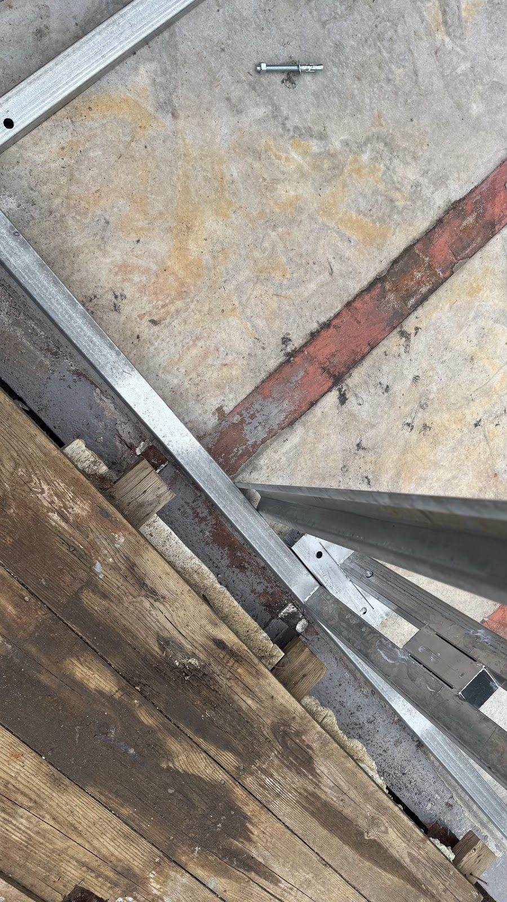
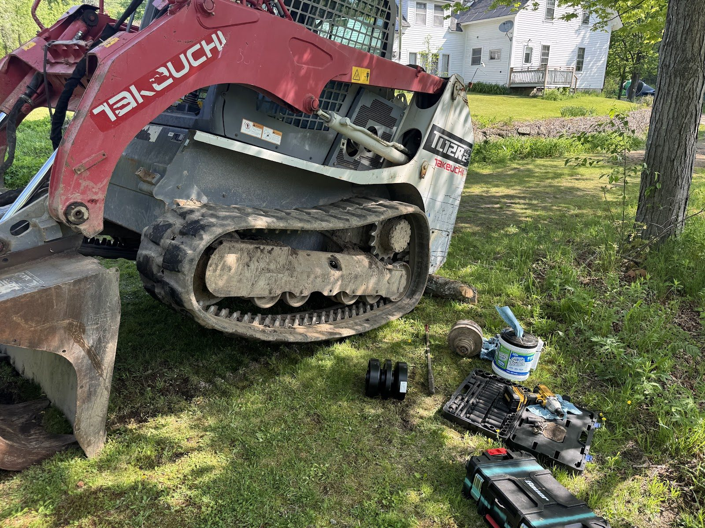
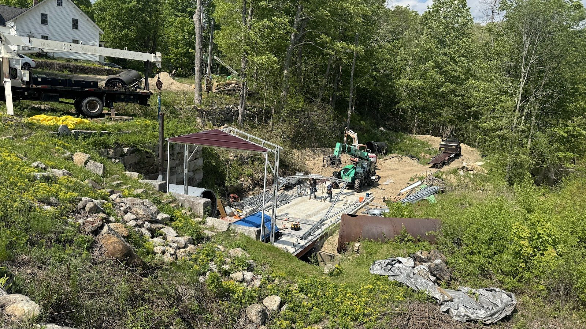

Storm Surprise: The May 19th Flood

On May 19th, a large storm parked itself over the watershed and refilled Waterloom Pond in a matter of hours.
The flooding was far beyond anything the forecast suggested. The work area went under, and this time it took equipment with it — tools, pumps, and gear that had no business being in a flood zone according to every weather product we checked the day before. The receding water left behind a work area full of debris that all has to be cleared before real work resumes.



Losing equipment stings. But it's worth being clear-eyed about what this event was: a reminder of exactly why this project exists and why it's built the way it's built. Rivers do this. Forecasts miss. The permanent design — the dam, the new abutment, the engineered trash rack supports, the rebuilt headgate — is all sized around the assumption that the worst day, not the average day, is the design day. May 19th was a data point, and the data has been noted.
To our neighbors around the pond: the sudden refill was the storm's doing, not a planned operation, and the drawdown will resume as conditions allow.
Cleanup is already underway, and the season's momentum is intact — the penstock rehab continues, and some very large deliveries are about to arrive on site. The next post will be a much happier one. Promise.